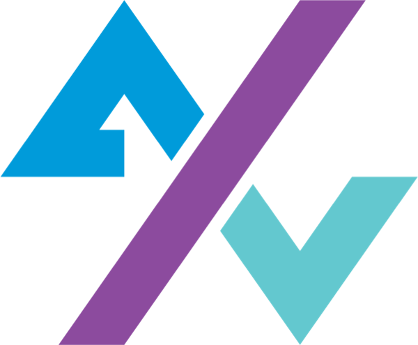

10 ta savol · taxminan 8 daqiqa
11-sinfProfessional IT development6-hafta · 16-darsSozlamalar fayllari qaysi katalogda?
/etc.Loglar odatda qayerda?
/var/log.rwxr-x--- oktali?
Ruxsatni o'zgartiruvchi buyruq?
chmod.Egasini o'zgartiruvchi buyruq?
chown.umask 022 da oddiy fayl?
Xizmat holatini ko'rsatuvchi buyruq?
systemctl status.Xizmat logini jonli ko'rish?
journalctl -u nom -f.Tinglayotgan portlarni ko'rsatuvchi?
ss -lntp.Minimal ruxsat qoidasi?
A'lo. Mavzu yaxshi o'zlashtirilgan.
Yaxshi. Xato qilgan savollar izohini qayta o'qing.
Konspekt va slaydlarni takrorlang, so'ng testni qayta yeching.
Takrorlang: 16-dars konspekti va slaydlari